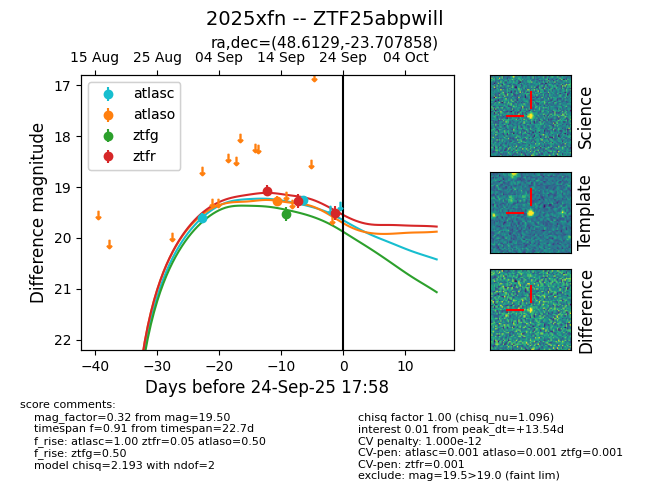
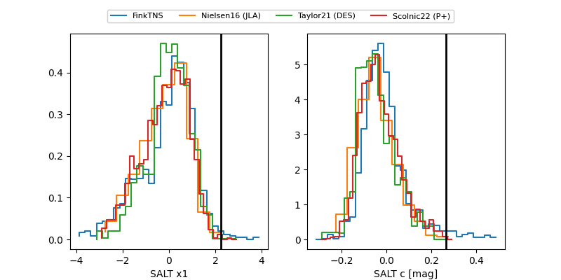

FINK: ZTF25abpwill
Lasair: ZTF25abpwill
ALeRCE: ZTF25abpwill
TNS: 2025xfn
YSE: 2025xfn
ZTF25abpwill (ztf,fink)
2025xfn (tns,yse)
equatorial (ra, dec) = (48.6129,-23.70786)
galactic (l, b) = (214.9682,-57.63396)


last atlasc=19.26, atlaso=19.26, ztfg=19.53, ztfr=19.50
2 atlasc, 1 atlaso, 1 ztfg, 3 ztfr detections